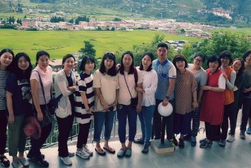

HOME
ABOUT YELHA BHUTAN
BHUTAN
TOUR PACKAGES
TRAVEL INFO
FLIGHT
BLOG
BHUTAN NEWS
CONTACT US
BOOK NOW
Home
Providing VIP tour service
We will send our luxury jets pick you from any cities around the World.
Previous
Next

EXPLORE OUR TOUR PACKAGES
Cultural Tours
CULTURAL TOURS
Special Tour
SPECIAL TOUR
Trekking tours
TREKKING TOURS
Festival Tours
FESTIVAL TOURS
Discover Bhutan By Interest
Trip Advisor Reviews
Best design tour packaging and providing professional tour service in the Kingdom of Bhutan. If you are thinking of visiting Bhutan make sure that u choose yelha bhutan tours
tripadvisor logo
CHADO_BHUTAN
6/26/2020
Bhutan is such a u usher and beautiful country and the best way to experience it is with Yelha Bhutan Yours. Stress free, The itinerary and arrangements perfect. The... read more
tripadvisor logo
GAZLE
5/28/2020
My grown up daughter and I had the most fantastic 12 days vacation from end October til start November 2019 with super competent guide, Chimi, and very skilled driver, Sangay.... read more
tripadvisor logo
ELLENMAURI
5/19/2020
Yelha organised our personalised 14 day trip to Bhutan. Through our lovely contact Samdup, every tiny detail was perfectly organised. He kept in touch up to the last minute with... read more
tripadvisor logo
ROBERTB11563
3/23/2020
We had the pleasure of taking a vacation to Bhutan. Right away we were greeted by our lovely and extremely competent guide and driver, Chimmi and Sangay from this travel... read more
tripadvisor logo
KIWIEM2014
11/04/2019
Travel and tour to Bhutan with Yelha Bhutan Tours is one of the most reputed travel company in Bhutan.
Yelha Bhutan assures that the tour groups get their... read more
tripadvisor logo
TRAVELLERSAVY
10/29/2019
I like to thank Yelha Bhutan Tours & Travel for giving us this GREAT Bhyuatn experience during 03-12th Oct. It is a very professional travel company. The Guide, PHURBA is... read more
tripadvisor logo
JANICEC2527
10/28/2019
9 years ago in Zimbabwe and later Singapore, I was lucky to meet a Rinpoche from Bhutan and from there I was intrigued with the Last Shangri-la. I had zero... read more
tripadvisor logo
LYNNCHUA11
10/26/2019
NextPrev
12
Gateways Into Bhutan
Yelha Bhutan Tours & Travel welcomes everyone! There are multiple points of entry and exit into and out of Bhutan. Just take the one you prefer
FLYING WITHIN BHUTAN
FLYING INTO BHUTAN
ENTERING BY ROAD
Flying within Bhutan
Featured In
yelhabhutantour
Tigers Nest Monastery- Throwback snow fall
Rest In Peace, Photo of Actress / Miss Vietna
Actor, Model, tv host from Vietnam Diệu Ly Showh
Thank you to our flight crews and airline teams fo
Ms Yumi Huynh , from Saigon city. Blogger and mode
Ema Datshi with made with fresh cheese from villag
Jakar Dzong or the “Castle of the White Bird”
ATR flight ready for take off at Paro Airport 🇧
Friends Travel Plan be like.
From the courtyard of Paro Dzong.
4 Star, Jakar Village Lodge at Bumthang valley ...
Follow on Instagram
Contact Us
Yelha Bhutan Travels & Tour
Opposite Druk Punjab Bank
2nd Floor-Dorji Gyeltshen Building, Nordzin Lam
Thimphu, Bhutan
Phone: +975 17609635/+975 02326050
Email: yelhabhutan@gmail.com
Quick Links
Disclaimer
"This website is the property of Yelha Bhutan Tours and Travels. No part of it maybe copied or published without the permission from the owner of this website. Yelha Bhutan Tours and Travels is a government registered travel company licensed by the Tourism Council of Bhutan.
All Rights Reserved Yelha Bhutan Tours & Travel. / Designed & Developed by aBit Private Limite.
| Sl.no | Position title | Position level | number of slots | Qualification required | Appointment status | Remark |
|---|---|---|---|---|---|---|
| 1 | Chief Tourism Officer | P1A | 1 | Bachelors (Preferred Advance training in Tourism Management) | Regular | In service |
| 2 | Jr. Engineer (Civil) | S2A | 1 | Class XII with Diploma (Engineering) | Regular | In service |
We are one of the only travel company which operated 24 x 7 and Our head office is located right at Norzin Lam street, just opposite the main Traffic post in Capital ‘Thimphu’ Yelha Bhutan Tours & Travels also provide you with Best experienced / licensed guide, drivers and trekking staff to explore Bhutan and make your vacation a memorable one. Yelha Bhutan Tours is solely owned and operated by Bhutanese and we have many marketing executives in lots of countries which can make you easier to book Bhutan tours packages. 85% of our clients are recommended clients by our previous tourist, therefore you will get the point how efficient are our tour guides, drivers and the office staffs. Yelha Bhutan is registered with the Ministry of Trade ( Trade License no : 1031593 ) under Ministry of Economic Affairs, Royal Government of Bhutan and Tourism Council of Bhutan. Yelha Bhutan Tours is also the official ticketing agents of Druk Air – Royal Bhutan Airlines ( official TO no : 504 ) & Bhutan Airlines ( official TO no : 010) We are also one of the only travel company in Bhutan which charters Airbus and luxury jets via our company for clients to other countries which doesn’t have flight services with Bhutan. At Yelha Bhutan we guarantee 100% Bhutan Visa approval for all travelers provided that they produce a valid passport with 6 month validity & deposit full payments for the tour as per law stated in Bhutan tourism policy. Our company is eco friendly and we promote environmentally friendly tours and treks that are in harmony with our traditions and cultural values. Our Yelha Bhutan Tours & Travels scheduled to shows the most interesting places and aspects of Bhutan. Yelha Bhutan tours is one of 10 travel company in Bhutan, and also one of the best travel company of Bhutan. We specialize in customized itineraries as well as group tours for all of Bhutan. Give us a chance to serve you. we promise you won’t regret it.